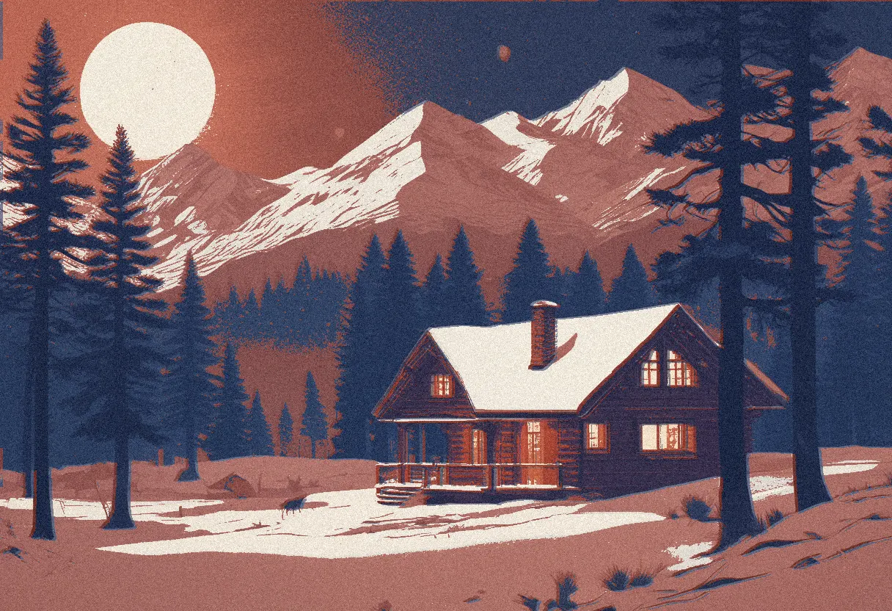
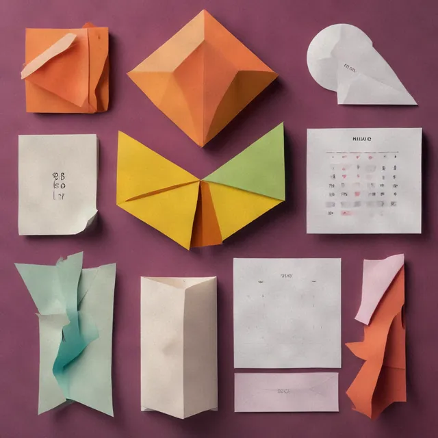
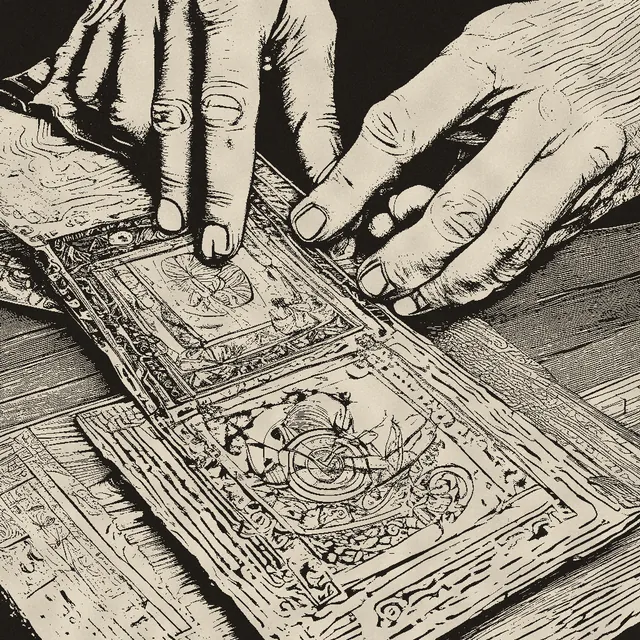

오늘의 놀이
네 개 · 아무거나 먼저 2분 · 질문 9개
2분 · 질문 9개01
나는 어떤 일 유형?
회사·집에서 흔히 겪는 장면 아홉 개. 제일 나 같은 걸 고르면 됩니다.
시작
10분 추리 게임폭설에 갇힌 산장.공개 전 그림이 사라졌다.
02
한겨울 사진관 사건 수첩
사진관 탐정과 고양이 조수가 되어 단서를 모으고, 네 사람을 심문하고, 범인을 지목하세요. 지금 제4화까지 — 진행은 저절로 저장돼요.
사건 시작
30초 · 매일 바뀜03
오늘의 운세
일운·금전운·대인운에 행운의 물건까지. 내일 오면 또 바뀌어요.
오늘 운세 보기
1분 · 카드 한 장04
타로 한 장
고민 하나 고르고, 엎어 둔 카드 중 한 장을 뒤집어 보세요.
카드 뽑기